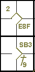
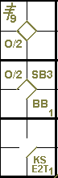
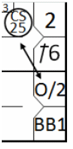
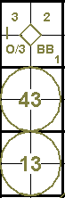
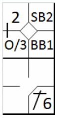
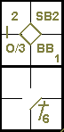
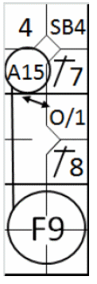
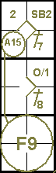
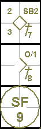

action { batter -> E8F }
/* The next batter hits a single to right field, the runner gains two bases */
action { batter -> 1B9 , runner1 -> ++ }
/* The runner on first base steals second base */
action { runner1 -> SB }

The notation “O/” is used to account for any advance by a runner at the choice of the defending team. “O/” is followed by the identifying number of the fielder who made the choice.
According to OBR 9.07(g): The official scorer shall not score a stolen base when a runner advances solely because of the defensive team's indifference to the runner's advance. The official scorer shall score such a play as a fielder's choice.
Comment: The scorer shall consider, in judging whether the defensive team has been indifferent to a runner's advance, the totality of the circumstances, including the inning and score of the game, whether the defensive team had held the runner on base, whether the pitcher had made any pickoff attempts on that runner before the runner's advance, whether the fielder ordinarily expected to cover the base to which the runner advanced made a move to cover such base, whether the defensive team had a legitimate strategic motive to not contest the runner's advance or whether the defensive team might be trying impermissibly to deny the runner credit for a stolen base. For example, with runners on first and third bases, the official scorer should ordinarily credit a stolen base when the runner on first advances to second, if, in the scorer’s judgment, the defensive team had a legitimate strategic motive – namely, preventing the runner on third base from scoring on the throw to second base – not to contest the runner’s advance to second base. The official scorer may conclude that the defensive team is impermissibly trying to deny a runner credit for a stolen base if, for example, the defensive team fails to defend the advance of a runner approaching a […] statistical title. ( Example 61: )
| WBSC | Translation in the scoring tool | Tool |
|---|---|---|
|
|
/* The first batter hits a fly ball to right field which is poorly caught. */ action { batter -> E8F } /* The next batter hits a single to right field, the runner gains two bases */ action { batter -> 1B9 , runner1 -> ++ } /* The runner on first base steals second base */ action { runner1 -> SB } |
 |
Example 62: Despite having seen that the runner on first is attempting to steal a base, the catcher makes no attempt to oppose it. The official scorer judges that there is no legitimate strategic motive not to make the throw, so it is a defensive indifference (undefended steal). The runner advances to second and the play is therefore recorded with “O/2”.
| WBSC | Translation in the scoring tool | Tool |
|---|---|---|

|
/* The first batter hits a fly ball to right field which is poorly caught. */ action { batter -> E8F } /* The next batter hits a single to right field, the runner gains two bases */ action { batter -> 1B9 , runner1 -> ++ } /* The runner on first base steals second base */ action { runner1 -> O/2 } |

|
Example 63:
With runners on second and third, the catcher drops the third strike.
He succeeds in recovering it and putting out the batter-runner, but the other runners reach base safely.
According to rule 9.12(f)(2) this will be scored as a fielder’s choice.
| WBSC | Translation in the scoring tool | Tool |
|---|---|---|

|
/* The first batter hits a triple to right field */ action { batter -> 3B9 } /* The next batter reaches first base on a 'base on ball' */ action { batter -> BB } /* The runner on first base steals second base */ action { runner1 -> SB } /* Third strike released, the catcher recovers the ball and relays to first base to get the batter out, the other two runners advance */ action { batter -> KS23 , runner2 -> O/2 , runner3 -> O/2 } |

|
When the catcher recovers the ball after a wild pitch or passed ball on the third strike, and throws out the batter-runner at first base, or tags out the batter-runner, but another runner or runners advance, the official scorer shall score the strikeout, the putout and assists, if any, and credit the advance of the other runner or runners on the play as a fielder’s choice [OBR 9.12(f)(2)].
The official scorer shall not charge a passed ball if the defensive team makes an out before any runners advance. For example, (…) if a catcher drops a pitch, for example, with a runner on first base, but the catcher recovers the ball and throws to second base in time to retire the runner, the official scorer shall not charge the catcher with a passed ball. The official scorer shall credit the advancement of any other runner on the play as a fielder’s choice. [OBR 9.13 Comment].
Example 64: It follows that the fielder’s choice would also be used when, in a similar action, the batter-runner reaches base safely on “KS E2T” or “KS 2E3”.
| WBSC | Translation in the scoring tool | Tool |
|---|---|---|

|
/* The first batter hits a triple to right field */ action { batter -> 3B9 } /* The next batter reaches first base on a 'base on ball' */ action { batter -> BB } /* The runner on first base steals second base */ action { runner1 -> SB } /* Third strike released, the catcher recovers the ball and relays to first base to get the batter out, the other two runners advance */ action { batter -> KSE2T , runner2 -> O/2 , runner3 -> O/2 } |
 |
IMPORTANT: As a general rule, a runner’s advance on a hit or a put out is recorded with the batting order number of the batter. An advance on an error committed against the batter or another runner is recorded with the batting order number of the batter, if the runners would have advanced anyway. When a runner’s advance should not have happened thanks to an error, write the number of the batter or runner in parentheses.
Another action where the symbol “O/” would be used is when, in the course of multiple attempts to steal (simultaneous or not), one of the runners is put out (or reaches base safely on an error), while the others reach the next base. To account for these latter advances, the symbol “O/”is used, followed by the number two, if the defensive play was initiated by the catcher, or one if it was initiated by the pitcher.
Example 65:
The attempted steal fails because of the putout on third base. The other runner’s advance is therefore annotated
with the symbol “O/2”.
The same notation would be made even if the putout had failed because of an error.
Put an arrow between the attempted steal and the O/2 to show that it happened during the same play.
| WBSC | Translation in the scoring tool | Tool |
|---|---|---|
|
 |
/* The first batter hits a single on the shortstop */ action { batter -> 1B6 } /* The next batter reaches first base on a 'base on ball' */ action { batter -> BB , runner1 -> + } /* The runners try to steal a base, but the runner in the second base is put out */ action { runner1 -> O/2 , runner2 -> CS25 } |

|
Example 66: The runner on first base is put out in a rundown play following a pickoff. The symbol “O/1” records the other runner’s advance to third base.
| WBSC | Translation in the scoring tool | Tool |
|---|---|---|

|
/* The first batter reaches the first base on a 'Hit by pitch' */ action { batter -> HP } /* The second batter hits a hit on first base, the runner advances */ action { batter -> 1B3 , runner1 -> + } /* The two runners attempt to steal a base, but the runner in first base is trapped and pulled out */ action { runner1 -> CS1364 , runner2 -> O/1 } |

|
Example 67:
There is one man out and a runner on second base.
The ground ball to the infield by the third man in the line-up is run down and recovered by the pitcher, who
quickly assists the first baseman to make a very close putout of the batter-runner.
In the headlong rush the first baseman hits his foot hard against the base and is seriously hurt.
The incident prevents him from stopping the runner from advancing, and the runner subsequently runs home.
| WBSC | Translation in the scoring tool | Tool |
|---|---|---|

|
/* The first batter wins first base on a 'base on ball' */ action { batter -> BB } /* The next batter hits a ball to the second baseman who relays to first base to make the out; the runner advances. */ action { batter -> 43 , runner1 -> + } /* The next batter hits a ball to the pitcher who relays to first base to make the out, the runner advances */ action { batter -> 13 , runner2 -> O/3 } |
 |
It should be noted that the umpire, after having called out the batter runner,did not feel it necessary to suspend the game, not having noticed any reason to blame any particular player.
The example clearly shows the runners’ advances according to the various phases of the game from which they originated: the advance to third on a hit and the continuation to home base due to the fielder’s indifference (in this case he was not in a position to check the advance, and it was certainly not through his own technical failings or errors).
Example 68:
With no men out and second base occupied, the pitcher deflects the ground ball hit by the batter, forcing the
short-stop who was running up to intervene, off course.
The short-stop nevertheless recovers the ball and throws to first base, where the batter-runner arrives safely.
The first baseman, considering the decision unfair, strenuously contests the umpire’s decision, ignoring the fact
that the lead runner takes the opportunity to run home. This advance, which is entirely legal, is recorded with “O/3” as it
was determined by the first baseman’s indifference.
| WBSC | Translation in the scoring tool | Tool |
|---|---|---|
|
 |
/* The first batter wins first base on a 'base on ball' */ action { batter -> BB } /* the runner on first base steals second base */ action { runner1 -> SB } /* The next batter hits a single on the shortstop, the runner advances */ action { batter -> 1B6 , runner2 -> + O/3 } |
 |
It may happen that, during an appeal play, as the ball is live and in play, one or more runners take advantage of the action to run to the next base. Such advances should also be recorded with the O/ symbol, followed by the number of the fielder who was the focus of the appeal play.
Example 69:
With no men out and runners on first and third, the fifth batter hits a fly ball to the right field, allowing the
runner on third to score.
Before making the first pitch to the next batter, the defense appeals on the grounds that he left the base early.
In the course of the appeal, which is upheld by the umpire concerned, the runner on first advances to second: “O/1”.
Also note the double play and the arrow to connect the appeal with the indifference.
| WBSC | Translation in the scoring tool | Tool |
|---|---|---|
|
 |
/* The first batter hits a single to left field */ action { batter -> 1B7 } /* the runner on first base steals second base */ action { runner1 -> SB } /* The next batter hits a single to center field, the runner advances */ action { batter -> 1B8 , runner2 -> + } /* The next batter hits a fly ball to right field, which is caught. The runner on third reaches home plate but doasn't touch the home plate. The runner on first advances. */ action { batter -> F9 , runner1 -> O/1 , runner3 -> A15 } |
 |
Exemple 70:
This differs from the previous example only in that the appeal is overturned. The run counts, the runner on
first advances with “O/1” and the fifth man in the line-up is credited with a sacrifice fly.
NOTE: Unlike the frequent cases in which the notation “O/” is used to account for advances which it is not
possible under the rules to consider “stolen”, all other advances for which “O/” is used must have the circumstances noted
in the appropriate place on the score card.
| WBSC | Transcription dans l'outil de scorage | Outil |
|---|---|---|

|
/* The first batter hits a single to left field */ action { batter -> 1B7 } /* the runner on first base steals second base */ action { runner1 -> SB } /* The next batter hits a single to center field, the runner advances */ action { batter -> 1B8 , runner2 -> + } /* The next batter hits a sacrifice fly to right field, the runner on the third base scores the run, the runner on the first base advance */ action { batter -> SF9 , runner1 -> O/1 , runner3 -> + } |
 |